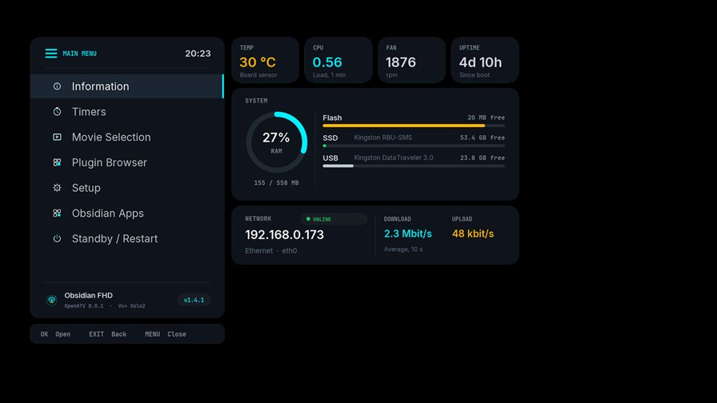
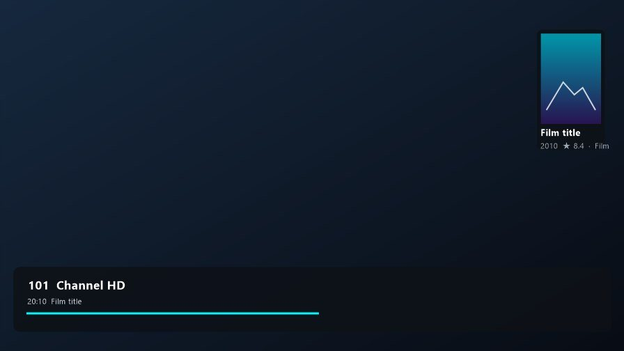
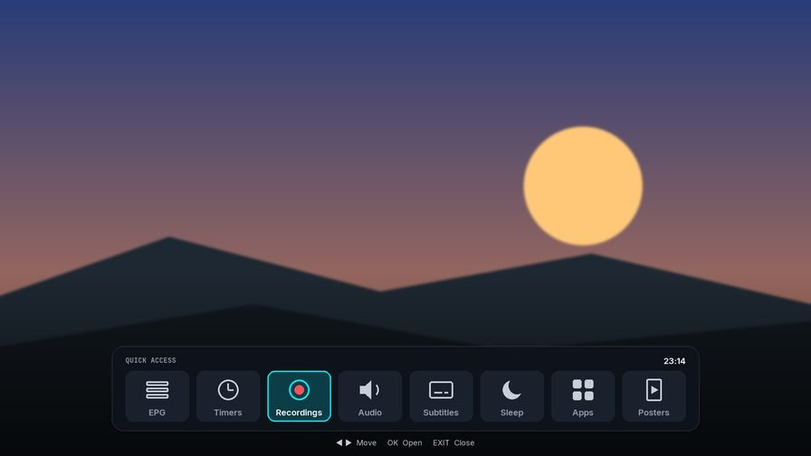
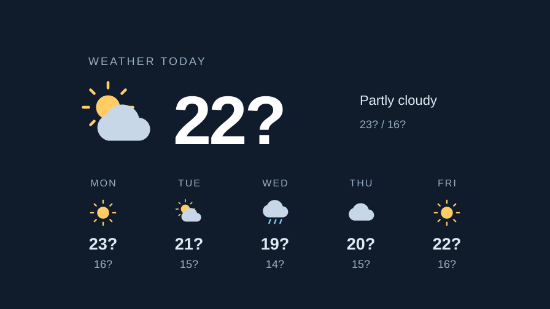
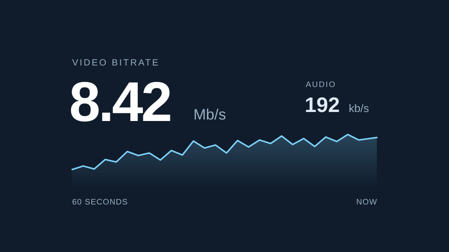

1.1.0
- خلفيات الأفلام في قائمتي القنوات Floating و Slate (الإعداد Backdrops، متوقف افتراضياً)
- تحسين مطابقة العناوين العربية وغير اللاتينية (Enigma Architect)
واجهة داكنة وعصرية بدقة 1080p لـ OpenATV وOpenPLi وصور enigma2 الأخرى. اختر نمطاً، وأضف تطبيقات Obsidian المجانية، وغيّر المظهر من جهاز التحكم. لا حاجة إلى حاسوب.
wget -qO- https://raw.githubusercontent.com/dali44g/Obsidian-FHD/main/install.sh | sh

غيّره من MENU › Obsidian Apps › Styles. Classic وFloating مضمّنان في الواجهة؛ أما البقية فحزم أنماط صغيرة تنزّلها من الشاشة نفسها.

Classic: مظهر Obsidian الأصلي، أسود مع لمسات سماوية.
يمكن لكلٍّ من القوائم وقائمة القنوات وشريط المعلومات استخدام نمط مختلف. كيف تغيّر النمط ›
ثبّتها من MENU › Obsidian Apps. كلٌّ منها اختياري وله تحديثاته الخاصة ويُزال بشكل نظيف. انقر على تطبيق لعرض دليله.

ملصقات الأفلام والمسلسلات مع التقييمات في أشرطة المعلومات، مع صور منفصلة للحالي والتالي.

شاهد قنوات هذا الجهاز على هاتفك أو جهازك اللوحي أو تلفاز آخر في المنزل، عبر تطبيق IPTV.

شريط اختصارات فوق البث المباشر: الدليل، المؤقتات، التسجيلات، بطاقات الصوت والترجمة، وتطبيقاتك.

مواقيت الصلاة لمسجدك على التلفاز، مع العد التنازلي للصلاة القادمة.

اعرض صور هاتفك على التلفاز. امسح رمز QR، دون تثبيت أي تطبيق.

ترجمة فورية بـ25 لغة على حاسوبك أو عبر Groq، تتكيّف وحدها مع حاسوبك.

طقس اليوم وتوقعات 5 أيام في شريط المعلومات، مع OAWeather (OAWeather-Pli على OpenPLi).

أبقِ الوقت ظاهراً على الشاشة أثناء المشاهدة. اختر التصميم والموضع والحجم واللون.

معدل بت الفيديو والصوت للقناة مباشرة، تحت الساعة أو داخل شريط المعلومات.
استخدم SSH أو Telnet (برنامج PuTTY على ويندوز) إلى عنوان IP الخاص بالجهاز، المستخدم root.
يختار المثبّت أحدث إصدار ويتحقق من المساحة الحرة أولاً. أعد تشغيله لاحقاً للتحديث.
MENU › Setup › System › User interface › Skin، اختر Obsidian-FHD ثم OK.
wget -qO- https://raw.githubusercontent.com/dali44g/Obsidian-FHD/main/install.sh | sh
تفضّل الملفات؟ نزّل ملف .ipk من أحدث إصدار، وانسخه إلى /tmp ثم شغّل opkg install.
هل هناك مشكلة؟ راجع المساعدة، أو افتح بلاغاً على GitHub، أو اكتب في موضوع المنتدى. يُذكر أصحاب البلاغات في سجل التغييرات.
ملصق الفيلم أو المسلسل وتقييمه وملخص قصير، يظهر مع شريط المعلومات. يتبع الملصق البرنامج: للحالي والتالي صورة خاصة بكلٍّ منهما في شريط المعلومات الثاني.
يتطلب اتصالاً بالإنترنت ومفتاح TMDB مجانياً وذاكرة USB أو قرصاً صلباً بمساحة حرة 100 ميغابايت: لا تُحفظ الملصقات أبداً على ذاكرة الجهاز الداخلية. غير معتمد من TMDB.

تظهر التسميات على الجهاز بلغة القوائم لديك.
أُصلح في 1.0.4 للصور التي تعمل من القرص الصلب (OpenMultiboot وEgamiBoot وNeoBoot). حدّث Posters من Obsidian Apps.
تحتاج الملصقات إلى دليل برامج بعنوان تعرفه قاعدة بيانات الأفلام. لا تحصل الأخبار والرياضة والبث المباشر على ملصق؛ ويعرض الشريط حينها شعار القناة.
انسخ مفتاح API (وليس رمز الوصول) من themoviedb.org › Settings › API وأدخله مجدداً.
يصبح جهازك خادم IPTV لمنزلك: أضفه في TiviMate أو IPTV Smarters (بيانات Xtream Codes) أو الصق رابط M3U في VLC، مع دليل البرامج والشعارات.
الشبكة المنزلية فقط، وجهاز واحد في كل مرة: يتوقف البث المباشر مؤقتاً على الجهاز أثناء المشاهدة. اختُبر مع قنوات IPTV؛ لم تُختبر قنوات الأقمار الصناعية والكابل والأرضية بعد.
تظهر التسميات على الجهاز بلغة القوائم لديك.
استخدم الشبكة المنزلية نفسها (وليس شبكة ضيوف). بعد 5 كلمات مرور خاطئة ينتظر الجهاز دقيقة واحدة. على iPhone، اسمح بالشبكة المحلية للتطبيق في الإعدادات › الخصوصية والأمان.
جهاز آخر يشاهد، أو ضُغط OK قبل لحظات (يُرفض الجهاز للمدة التي حددتها).
حدّث القائمة في تطبيق IPTV بعد إضافة الباقات أو إعادة تسميتها.
افتح Dock بضغطة مطوّلة على OK أثناء البث المباشر وانتقل إلى ما تستخدمه أكثر. يتبع نمطك، أو اختر مظهر Glass أو Depth.
لا يحتاج إلى أي شيء آخر: لا إنترنت ولا قرص.
تظهر التسميات على الجهاز بلغة القوائم لديك.
لا تحتوي الصورة على شاشة لهذا الاختصار (مثل النص المرئي). اختر اختصاراً آخر لهذا المكان.
قد تستخدمه إضافة أخرى. اضبط Open with على الأزرق أو الأزرق المطوّل.
مواقيت الصلاة لمسجدك من mawaqit.net، مع تذكير قبل الأذان وتنبيهات الإقامة ووضع عرض بملء الشاشة اختياري.
يتطلب اتصالاً بالإنترنت وحساباً مجانياً على mawaqit.net. ليس من إنتاج MAWAQIT.
تظهر التسميات على الجهاز بلغة القوائم لديك.
أُصلح في 1.1.2 للأجهزة المتصلة بالكابل. حدّث Mawaqit من Obsidian Apps.
تأكد من اختيار المسجد الصحيح في Mosque، ثم اضغط OK في الشاشة الرئيسية للتحديث.
أرسل صورة من هاتفك إلى التلفاز: امسح الرمز، واختر صورة، ثم اضغط Send to TV. تبقى الصور داخل منزلك.
يتطلب هاتفاً على الشبكة المنزلية نفسها. تبقى الصورة المعروضة في الذاكرة فقط؛ GREEN يحفظها على ذاكرة USB أو قرص صلب.
تظهر التسميات على الجهاز بلغة القوائم لديك.
يجب أن يكون الهاتف على الشبكة المنزلية نفسها للجهاز (وليس شبكة ضيوف أو بيانات الجوال).
أُصلح في 1.0.2 للصور التي تعمل من القرص الصلب (الإقلاع المتعدد). حدّث Cast من Obsidian Apps.
ترجمة فورية بـ25 لغة على حاسوبك أو عبر Groq، تتكيّف وحدها مع حاسوبك.
يتطلب ffmpeg (يُثبَّت مع التطبيق) وخادم كلام: مفتاح Groq مجاني (سحابي) أو Docker على حاسوب في المنزل.
الخصوصية: مع Groq تُرسل مقاطع قصيرة من صوت القناة إلى Groq. مع حاسوبك يبقى الصوت والنص في المنزل. يُحفظ مفتاح Groq في ملف لا يقرؤه إلا النظام ولا يظهر أبداً في السجل.
يقوم الحاسوب بالتعرف على الكلام والترجمة، فيبقى الصوت داخل المنزل. يحتاج إلى Docker فقط، دون بطاقة رسومية. يجب أن يكون الحاسوب والمستقبل على الشبكة المنزلية نفسها.
obsidian-subtitles داخل مجلد المستخدم، ثم يشغّل الإعداد.irm https://github.com/dali44g/Obsidian-FHD/releases/download/subtitles-local-v3/install.ps1 | iex
curl -fsSL https://github.com/dali44g/Obsidian-FHD/releases/download/subtitles-local-v3/install.sh | sh
أو بملف ZIP: نزّل ملف الإعداد ZIP وفك ضغطه في مجلد دائم، مثل Documents\obsidian-subtitles، ثم شغّل الإعداد في ذلك المجلد. على Windows: انقر بالزر الأيمن على setup.ps1 › Run with PowerShell، أو اكتب الأمر الأول أدناه في طرفية مفتوحة داخل المجلد. على Mac/Linux: الأمر الثاني.
powershell -ExecutionPolicy Bypass -File .\setup.ps1
sh setup.sh
لاحقاً، لفحص الخوادم من جديد: docker compose run --rm check في مجلد الإعداد. قد يطلب Windows السماح لـDocker على الشبكات الخاصة: وافق. لا تفتح المنفذين 8000/5000 على الراوتر أبداً.
docker compose down (لا تضف -v أبداً: فهو يحذف النماذج المنزّلة). الحاويات المنشأة يدوياً (speaches، obsidian-translate، libretranslate): أوقف واحذف هذه فقط، وتبقى مجلداتها ووحدات التخزين..env والنماذج المنزّلة، وتُستبدل ملفات البرنامج. مع ملف ZIP: فك ضغطه فوق مجلد الإعداد ثم شغّل الإعداد.D:/obsidian-translate/argos، أو models في مجلد إعداد قديم)؟ افتح .env في مجلد الإعداد، واكتب MODELS=D:/obsidian-translate (المجلد الذي يحتوي argos) ثم شغّل الإعداد من جديد. تبقى نماذج الكلام المنزّلة سابقاً.192.168.1.20:8000.تعمل اللغات الـ25 كلها كلغة كلام وكلغة ترجمة. تُنزَّل النماذج تلقائياً عند أول استخدام للغة، ثم تبقى على الحاسوب وتعمل دون إنترنت. إلى أن تجهز الترجمة، تظهر الترجمة بلغة الكلام.
اترك نحو 10 غيغابايت فارغة على الحاسوب لـDocker والنماذج.
| اللغة | نموذج الكلام (تلقائي) | أول تنزيل للترجمة |
|---|---|---|
| Arabic (ar) | Whisper medium (small على حاسوب أبطأ) | نموذج صغير لكل زوج لغات عند أول استخدام |
| Persian (fa) | Whisper medium (small على حاسوب أبطأ) | نموذج صغير لكل زوج لغات عند أول استخدام |
| French (fr) | Whisper small | نموذج صغير لكل زوج لغات عند أول استخدام |
| English (en) | Whisper small | لا شيء للترجمة الإنجليزية |
| German (de) | Whisper small | نموذج صغير لكل زوج لغات عند أول استخدام |
| Spanish (es) | Whisper small | نموذج صغير لكل زوج لغات عند أول استخدام |
| Italian (it) | Whisper small | نموذج صغير لكل زوج لغات عند أول استخدام |
| Turkish (tr) | Whisper small | نموذج صغير لكل زوج لغات عند أول استخدام |
| Portuguese (pt) | Whisper small | نموذج صغير لكل زوج لغات عند أول استخدام |
| Dutch (nl) | Whisper small | نموذج صغير لكل زوج لغات عند أول استخدام |
| Bulgarian (bg) | Whisper medium (small على حاسوب أبطأ) | نموذج صغير لكل زوج لغات عند أول استخدام |
| Croatian (hr) | Whisper medium (small على حاسوب أبطأ) | نموذج مشترك واحد، نحو 461 ميغابايت، مرة واحدة |
| Serbian (sr) | Whisper medium (small على حاسوب أبطأ) | نموذج مشترك واحد، نحو 461 ميغابايت، مرة واحدة |
| Bosnian (bs) | Whisper medium (small على حاسوب أبطأ) | نموذج مشترك واحد، نحو 461 ميغابايت، مرة واحدة |
| Slovenian (sl) | Whisper medium (small على حاسوب أبطأ) | نموذج صغير لكل زوج لغات عند أول استخدام |
| Macedonian (mk) | Whisper medium (small على حاسوب أبطأ) | نموذج مشترك واحد، نحو 461 ميغابايت، مرة واحدة |
| Albanian (sq) | Whisper medium (small على حاسوب أبطأ) | نموذج صغير لكل زوج لغات عند أول استخدام |
| Romanian (ro) | Whisper small | نموذج صغير لكل زوج لغات عند أول استخدام |
| Greek (el) | Whisper medium (small على حاسوب أبطأ) | نموذج صغير لكل زوج لغات عند أول استخدام |
| Polish (pl) | Whisper small | نموذج صغير لكل زوج لغات عند أول استخدام |
| Czech (cs) | Whisper small | نموذج صغير لكل زوج لغات عند أول استخدام |
| Slovak (sk) | Whisper medium (small على حاسوب أبطأ) | نموذج صغير لكل زوج لغات عند أول استخدام |
| Hungarian (hu) | Whisper medium (small على حاسوب أبطأ) | نموذج صغير لكل زوج لغات عند أول استخدام |
| Ukrainian (uk) | Whisper small | نموذج صغير لكل زوج لغات عند أول استخدام |
| Russian (ru) | Whisper small | نموذج صغير لكل زوج لغات عند أول استخدام |
لا شيء لضبطه. يتكيّف الإعداد مع حاسوبك، وأثناء المشاهدة يقيس التطبيق سرعة استجابة الحاسوب. إذا لم يواكب البث، ينتقل Speech model = Recommended وحده إلى نموذج أصغر (medium › small › base) ويذكر ذلك في سطر الحالة. يُحفظ ذلك لهذا الحاسوب ويُجرَّب النموذج الأفضل من جديد بعد أسبوع، أو فوراً من الإعدادات › PC speed.
النماذج الأصغر أقل دقة قليلاً، خاصة للعربية والفارسية ولغات البلقان. إذا كان حتى أصغر نموذج بطيئاً، يقترح التطبيق Groq (مجاني، في السحابة)، ولا يحتاج إلى حاسوب.
مع حاسوبك يبقى الصوت والنص داخل المنزل، ولا تستخدم الإنترنت إلا تنزيلات النماذج. لا يُستخدم مفتاح Groq المحفوظ للترجمة إلا إذا فعّلت Allow cloud fallback. اختيار Groq لخادم الكلام يرسل مقاطع صوتية قصيرة إلى Groq.
تظهر التسميات على الجهاز بلغة القوائم لديك.
تأكد أن Docker Desktop يعمل وأن الحاسوب ليس في وضع السكون. شغّل docker compose run --rm check في مجلد الإعداد. على المستقبل استخدم العنوان الذي عرضه الإعداد (وليس localhost) مع :8000.
ينتقل التطبيق وحده إلى نموذج أصغر بعد ثوانٍ (انظر حاسوب بطيء أو قديم). أغلق البرامج الثقيلة على الحاسوب، أو أعطِ Docker معالجات وذاكرة أكثر من Docker Desktop › Settings › Resources.
يحتاج الحاسوب إلى الإنترنت في المرة الأولى ومساحة كافية. يعيد التطبيق المحاولة وحده، ولا تُحذف النماذج العاملة أبداً. التفاصيل: docker compose logs --tail 100 speech translate.
يعمل حاسوبك بإعداد قديم: اتبع تحديث تثبيت موجود.
للخطة المجانية في Groq حدود في الساعة واليوم. تعود الترجمة وحدها، ومفتاح مجاني ثانٍ يتولى فوراً. خادم الحاسوب بلا حدود.
الانقطاعات القصيرة لا تُلاحظ. بعد انقطاع أطول تعمل القناة بلا ترجمة ثم تعود وحدها.
السطر تحت المربعات يذكر الناقص: عنوان الحاسوب أو مفتاح Groq أو ffmpeg. BLUE يفتح السجل، وBLUE مرة أخرى يعرض رمز QR لإرساله.
wsl --install (أو wsl --update)، ثم أعد تشغيل الحاسوب.طقس اليوم وتوقعات 5 أيام أعلى شريط المعلومات، بنمط الواجهة. جزء من الواجهة ولا يحتاج إلا إضافة OAWeather.
يتطلب إضافة OAWeather والإنترنت.
تظهر التسميات على الجهاز بلغة القوائم لديك.
منذ 1.8.0 تستخدم الواجهة المدينة أو الموقع المضبوط عندما لا يوفّر المزوّد نقطة رصد. اختر موقعك واحفظه في OAWeather.
أبقِ الوقت ظاهراً على الشاشة أثناء المشاهدة، بتصميم Minimal أو Flip أو Stacked. جزء من الواجهة، لا شيء آخر للتثبيت.
لا يحتاج إلى أي شيء آخر: لا إنترنت ولا إضافة.
تظهر التسميات على الجهاز بلغة القوائم لديك.
إذا كانت إضافة Permanent Clock المنفصلة مفعّلة، أوقفها. يجب أن تكون واجهة Obsidian هي الواجهة النشطة.
معدل بت الفيديو والصوت للقناة، تحت الساعة أو داخل شريط المعلومات. جزء من الواجهة ولا يحتاج إلا إضافة لمعدل البت.
يتطلب BitrateViewer أو إضافة Bitrate في OpenPLi. يعمل على قنوات الأقمار الصناعية والكابل والأرضية.
تظهر التسميات على الجهاز بلغة القوائم لديك.
يُقاس معدل البت من الموالف، لذا يعمل فقط على قنوات الأقمار الصناعية والكابل والأرضية.
أدلة قصيرة للواجهة نفسها. لكل تطبيق صفحته الخاصة بالتثبيت والإعدادات وحل المشكلات.
المثبّت بسطر واحد، وتثبيت ملف .ipk يدوياً، والتحديث دون فقدان إعداداتك.
غيّر القوائم وقائمة القنوات وشريط المعلومات، ونزّل الحزم، وعُد إلى Classic.
ما تم اختباره، وما يعمل دون جهاز اختبار، وملاحظات خاصة بكل صورة.
الأسئلة الأكثر تكراراً في المنتدى.
الأدلة قيد الكتابة. في الأثناء، تجيب صفحات التطبيقات وموضوع المنتدى عن معظم الأسئلة.